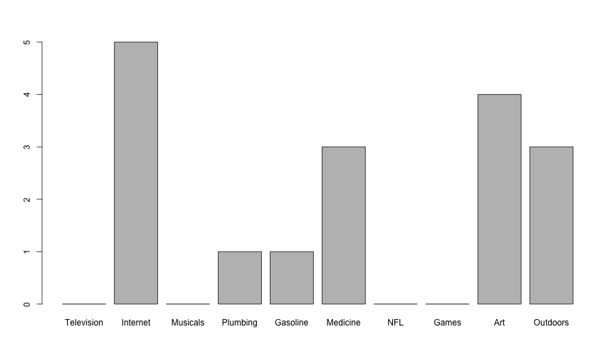

Ruben Gamboa
Professor
http://www.hercampus.com/school/u-mass-amherst/gif-story-10-reasons-being-sick-college-worst

Big Brother is watching us...can we use the same tools to watch back?
Anyone can watch us, not just the Big Brother of Orwell
Ease of access
Extreme ease of access, open to amateur hour
Other countries
Things not covered by outdated laws
Advances in technology repurposing old surveillance
Mixing government and private industry
Can we control what others know? (Warren-Brandeis Privacy)
Can we control what they do with that knowledge? (Westin Privacy)
Best practices?
With all this data, why can't we predict crime?
What if we give away our privacy to have more safety?
Suppose 1% of the population is a terrorist
Let's write a program that predicts whether person X is a terrorist
Conversely, let's say we have a program that works 99% of the time (with Yes and No)
What if the percentage of terrorists is even smaller
E.g., if 0.1% of adults are terrorists